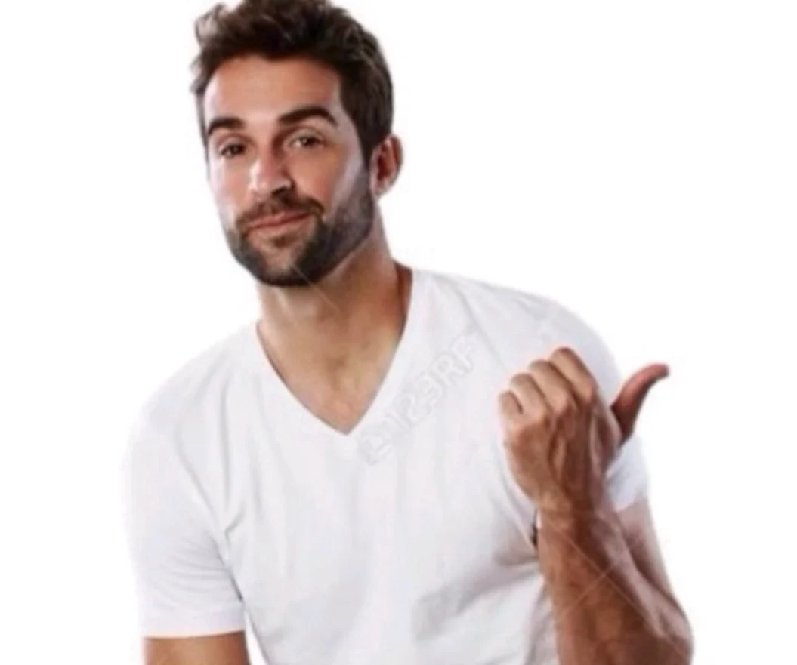
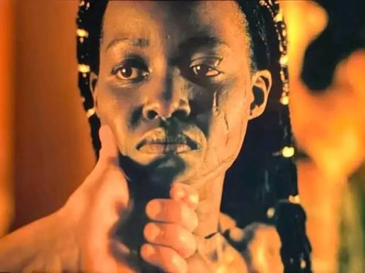
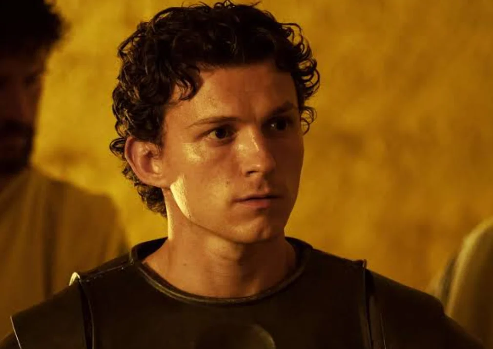

원작은 헬레네가 미녀라서 전쟁 일으킨걸로 나오는데
다행이도
영화에선 아가멤논이 자기 야욕 때문에 무역망 차지하려고 전쟁 일으켰다는 식으로 묘사됨
만약 헬레나가 절세미녀라서 전쟁일어났다라고 나왔으면 몰입안됐을듯



원작은 헬레네가 미녀라서 전쟁 일으킨걸로 나오는데
다행이도
영화에선 아가멤논이 자기 야욕 때문에 무역망 차지하려고 전쟁 일으켰다는 식으로 묘사됨
만약 헬레나가 절세미녀라서 전쟁일어났다라고 나왔으면 몰입안됐을듯
댓글
수집 당시 댓글 44개
lIIlIllIIlI · 13 시간 전
억울 연기로 아카데미 상까지 받은 사람을 왜 세웠겠음 놀란은 신화 자체를 철저히 부정할려고 그런다는 의도를 느꼈음 신화 그거 전쟁 잔혹사 미화할려고 만든거잖아 실제로는 이게 맞을걸? 하는 느낌으로 헬레네는 스파르타 왕에 딸로써 왕위에 정당성을 위한 도구로 전쟁은 강간과 학살이 벌어지는 무대로 책략은 기존에 인간사이에 있던 최소한에 룰을 깨는 악질 사기로 영웅은 오히려 전쟁에서 소모되 희생자이자 가해자로 신들은 자연과 심리적 내면 묘사로 호메로스에 오디세이 또한 청동기 시대에 일어난 일을 당시 호메로스에 시각으로 재구성 한거 처럼 신화를 안믿는 현대인의 시각으로 인간 잔혹사와 그 소용돌이에서도 유일하게 빛나는 사랑 이야기로 재구성했다고 느낌
lIIlIllIIlI · 13 시간 전
여기서 이런 놀란에 시각 자체가 자기 취향이 아니다 제우스 신 모습이 직접 나오고 인간은 신에게 과하게 영향 받고 휘황 찬란한 신화와 운명론적 세계관을 꼭 보고 싶기에 난 놀란 감독 영화 전체가 별로다 라고 하면 모를까 놀란의 이번 오디세이에 다른 모든건 훌룡 하지만 헬레네만 옥에 티라고 주장한다? 솔직히 귀칼에서 tva 시리즈 아예 안보고 시각 애니메이션만 본 사람이나 어벤져스 엔드게임에서 이전 작품 모르지만 뿌슝빠슝하면서 화려한 cg만 감상한 친구들이랑 다를게 없다고 느껴짐
그리피스 · 2 시간 전
에 의 구분 좀
이상하다 · 1 시간 전
이 정도는 구어체라 치고 넘어가자
하드코딩 · 1 시간 전
존나 억울해보이긴 했어
코인의정석 · 13 시간 전
나도 처음엔 이해안갔는데 놀란 인터뷰 보고 이해함 원작은 헬레네 미모 때문에 싸운거에서 놀란식 해석은 미모하나때문에 싸웠을리가 없다 무역 항로 때문에 싸웠을것이다 (영화내 이런 대사가 2번이나 나옴) 라는점임 사실 그 시대 사람들이 아무리 미개해도 여자하나땜에 전쟁을 한게 좀 억지스러웠는데 놀란식으로 매끄럽게 해석한 느낌임. 이런 관점에서 봤을 때 헬레네가 예뻐버리면 놀란식의 해석에 사람들이 공감을 못함 '예뻐서 전쟁 했을 수도 있지' 하면서.. 근데 헬레네가 못생겨버리니까 확 와닿았음. 헬레네가 예뻐서 전쟁한게 아니구나 다른 이유가 있겠구나 라는 놀란의 해석에 공감이 바로 되어버림. 놀란식의 해석(헬레네는 명분일뿐 실리가 있었다)을 관객이 공감하려면 헬레네는 못생긴게 더 작품의 이해를 돕는다고봄
lIIlIllIIlI · 13 시간 전
이게 맞음 자꾸 놀란은 신 자체에 대해 부정하는 듯한 묘사를 하는데 아프로디테니 황금사과니를 얘기하는거 자체가.....
아이스크림마싯엉 · 3 시간 전
신 자체를 부정한다고 하기엔 하데스도 나오고 ..
망그러진곰 · 3 시간 전
하데스는 안나오잖아
아이스크림마싯엉 · 3 시간 전
바닥에서 기어나오고.. 퀴클롭스도 있고.
lIIlIllIIlI · 2 시간 전
하데스 안나옴 그거 다른 캐릭이고 그 캐릭을 포함해서 철갑 거인과 외눈거인 세이렌은 괴물이지 신이 아니고 일련에 괴물들은 오디세우스에 트라우마로 볼 수 있음
미캉 · 13 시간 전
보면서 극 자체에서 문제가 된건 없었던거 같지만 아름답다고 파리스에게 인증찍어준 아프로디테가 문제 아닐까? 여신의 심미안이 문제이거나 폭탄처리를 파리스에게 맡겼거나
lIIlIllIIlI · 13 시간 전
놀란은 포세이돈을 바다로 아테나를 그냥 트라우마로 묘사함 아프로디테 자체가 그냥 신앙뿐이라고 해석했을 수도 있음
미캉 · 13 시간 전
놀란 해석을 따라가는게 자연스럽긴 한데 트로이에서 헬레네를 납치할 주된 이유가 사라지는거라 이 부분은 놀란도 주제의식을 위해 좀 뭉갠 느낌이 있는듯
lIIlIllIIlI · 13 시간 전
그렇긴 하지 뭉갠걸 표현 하는 순간 은근히 신화를 부정하는게 아니라 대놓고 노골적으로 신화를 부정하는거라 쫌 짜치니까 그냥 대충 넘긴 느낌이긴함
일후에조이랑결혼 · 13 시간 전
아니 잠깐 나올거면 존나게 이쁜 쭉쭉빵빵 모델 흑인누나가 끄아앙 거리는걸 보여줫으면 된건데 뭔 되다만 진흙쿠키련이 울어재끼니까 좆같다이거에요
lIIlIllIIlI · 13 시간 전
흑인인게 중요한게 아니라 예쁘지 않은 배우여야 한거임 그래야 미녀 때문에 전쟁했다는건 구라라는 놀란의 시각을 더 표현 가능하니까
일후에조이랑결혼 · 13 시간 전
너 놀란이지 이런 큰 뜻을 나같은 소인은 이해못한다고
lIIlIllIIlI · 13 시간 전
아니야 너도 너만에 방식으로 잘즐겼음 이번 오디세이는 시각 효과랑 활 튕기는 소리나 세이렌 목소리 등 음향효과로도 충분히 가치있어서 너도 잘 즐기고 현실로 복귀해 열심히 사느라 생각할 틈도 없던거임
타락파워전사 · 12 시간 전
세이렌 목소리가 나와?
lIIlIllIIlI · 11 시간 전
세이렌 목소리라기 보다는 목소리 들을때 다른 사람들 기준으로 먹먹하게 들리는 음향에서 낮게 깔리는 bgm을 말한거긴함 거기에 오디세우스 소리지르는거까지
sksjwu · 13 시간 전
엠흑 쉴더중에 파리스가 왜 엠흑데려갔냐는 말에 대답하는사람이 하나도없음
없다요 · 13 시간 전
시발 파리스가 퍼리충처럼 추녀충이었겠지
Jabberwocky · 5 시간 전
흑티쉬 빻티쉬 혼종
lIIlIllIIlI · 2 시간 전
파리스가 납치한것도 메넬라오스가 쫒아간것도 왕족 혈통은 헬레네라서 왕위에 전통성을 위한거라고 대답하는 사람들 많던데?
하드코딩 · 1 시간 전
이 글 자체가 그에 대한 내용인데 잘 이해가 안되냐
붐업단2 · 10 시간 전
거슬리지 왜 안거슬려 영화가 잼쓰니깐 참는거지
여름날 · 9 시간 전
맞음 이야기흐름상 비중이 적고 전쟁에 다른 이유가 있으니 흐린눈 하는거지 와 최적의 캐스팅이다<-이거는 절대아님 오히려 영화에서 최악의 캐스팅중 하나인건 변함없음
회사에서코고는중 · 8 시간 전
머래 고작 5분인가 8분 나온다는데 나올때마다 몰입 박살내더만
Cursor · 7 시간 전
뭐 영화내에서 얘기했듯이 외모때문이 아니라고 못박았으니 원전이나 알고있던 지식 제외하고 무역항로 장악을 위한 발사대라고 생각하기로함 난 다 괜찮았는데 바다에서 폭풍칠때 광과민성 쇼크 오는줄 알았음 ㅋㅋㅋㅋ 눈 감고있는데도 눈 아픔 ㅅㅂ
인간성기사뿌뿌뽕 · 7 시간 전
다시 돌아가는데 헬레네가 손 붙잡고 부인에게 전해주세요. 전쟁을 일으켜 죄송하다고 라고 말할 때 분노와 죄책감이 느껴져서 좋았음..
YAGOO · 7 시간 전
그 논리면 파리스는 왜 추녀를 데려갔느냐는 설명도 작중에 나왔어야함 그냥 외모는 맥거핀 같은거임
종이면봉 · 6 시간 전
작중 헬레네가 미녀가 아니라면 파리스는 왜 헬레네를 데려간거임? 헬레네가 못생겨도 된다는거는 그냥 끼워맞춘거 같음
lIIlIllIIlI · 2 시간 전
애초에 끼워맞춘게 아니라 대놓고 영화에서 언급하는거고 그런 재구성 자체가 싫다면 놀란에 이번 오디세이 자체가 취향에 안맞는거임 하지만 호메로스에 오디세이도 실제 고증 보다는 재구성에 가까워서 영화에 대한 충분한 근간이 있다고 생각함
lIIlIllIIlI · 2 시간 전
파리스가 헬레네를 납치한것도 아가멤논 처럼 스파르타에 대한 권력욕으로 생각할 수도 있잖음?
momento · 5 시간 전
ㅎ ㅏ지만 저거 보면 저 순간에 갑자기 몰입이 확 깨짐
Boobie · 4 시간 전
신화랑 다른점이 많아서 이걸 오디세이라고 보면 안되고 크리스토퍼 놀란의 오디세이 라고 생각하고 봐야하는듯 나도 몰입 깨지는건 많았는데 전체적으로 영어도 고풍스럽게 하는거 없이 현대식 영어가 많았고 그런데 그런거 빼고 봐야 하는 극이라고 생각했음 그냥
Jules · 3 시간 전
작 중에서 메넬라오스가 헬레나 얼굴 잡으면서 "이게 바로 배 1,000척을 띄운 얼굴이지" 하고선 흉터난 얼굴 돌리면서 "지금은 500척 정돈가" 라고 비꼬면서 말하는 대사 자체가 어차피 '헬레나의 미모는 이쁘든 못생겼든 그게 중요한 게 아니다' 라고 감독이 말한 거 라고 느껴졌음 트로이에선 패리스-헬레나의 명분이 5 아가멤논의 욕심 5 정도로 비춰줬다면 오디세이에서는 헬레나 1 아가멤논 9 정도로 전쟁의 명분을 삼은 느낌이었음
망그러진곰 · 3 시간 전
그렇지. 헬레나는 명분일 뿐이고 실제 목적은 무역로를 빼앗는거같았음
끼룩끼룩이 · 3 시간 전
벌칙게임이면 이해가됨 ㅋㅋㅋ
로드맨 · 2 시간 전
쟤는 그냥 명분인걸로 나옴
년만에회원가입처음함 · 2 시간 전
사람들이 오해하는게 있는데 메넬라우스가 반쪽짜리 헬레나라고 소개하는 저 장면은 얼굴의 흉터때문이 아니라 토치로 한번 구워서 반쪽짜리라고 한거임
야옹몬 · 2 시간 전
뭐래 시발 존나 거슬렸는데 젠데랑 점마랑 나올때마다 몰입방해함 그래도 역대급 명작이라 참을만한거지
박제 · 1 시간 전
진짜 말 그대로 전쟁을 일으키기 위해 헬레나를 명분으로 삼은건가